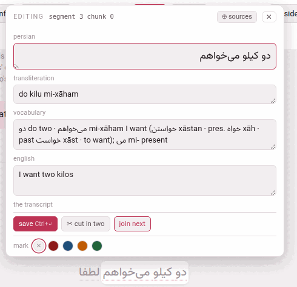

Editing a phrase in the player
A video’s writing door is the gloss cloud itself, and it needs no mode: point at a phrase and the cloud is already there. It carries two things that write into the video — a row of colours, and ✎ edit. Both save straight into the video’s annotations.json; there is nothing to rebuild, because the player reads that file afresh on every visit, so the phrase is redrawn in place at once and a reload shows the same.
1. The four colours#
At the foot of every cloud is the mark row: a ✕ and four dots — red, blue, orange, green. One click marks the phrase in that colour, and it wears the colour in the transcript from that moment; ✕ takes the mark off. It is a reading gesture, not an edit, so it is one click and never sits behind the ✎.
They are the reading editions’ own four colours, spelled the same and drawn in the same shades. Nothing reads them: no tool does anything with a colour but check that it is one of the four, no card carries one, no page filters by one. It is your own mark on the text — this is the word I did not know, this is the construction I keep missing.
A colour, like every edit made in the player, is written into annotations.json. A video made by an LLM also keeps the answer it was built from, under parts/; running merge_parts.py again by hand would rebuild annotations.json from those and lose the colours and the edits. The pages never run it on a video that is already there (A video’s files).
2. The form#
✎ edit, in the row with + card and ⧉ copy, turns the cloud into a form. Its head says which phrase it is, the way the checker names it — editing segment 3 chunk 0 — so that a refusal about “segment 3 chunk 0” is recognisably about this one.

The fields are named the way this video’s language names them:
| Field | Holds |
|---|---|
| the language’s name (persian, japanese, italian…) | the phrase’s text, in the language’s own face and direction |
| words (Japanese, Chinese) | the phrase divided into words, each with its reading — below |
| kana (Japanese) | the reading of the whole phrase |
| transliteration, pronunciation, rōmaji or pinyin | its romanisation, called what the language calls it |
| vocabulary | the vocabulary line: the dictionary form, the root, what it is made of |
| the gloss language’s name (english, italian…) | what the phrase means here — called meaning when the video is glossed in the language it teaches |
| the transcript | the one checkbox: below |
Target-language boxes take the language’s face and direction; the vocabulary and the meaning take the gloss language’s, so an Arabic meaning runs right to left inside this left-to-right form.
Under the fields: save (Ctrl+↵, or ⌘+↵), ✂ cut in two, join next, and — from the second phrase of a caption on — join previous; those three move where a phrase ends (Cutting and joining). The colour row stays at the foot. ⊕ sources in the head opens the column described below, and ✕ or Esc closes the form.
While the form is open the cloud stops being a hover: it stays when the pointer leaves it, and pointing at another phrase does not wipe what you have half typed. The video pauses, because a page that follows the speaker would otherwise scroll the phrase away from under your hands; it plays on when you close the form, if it was playing.
What is saved is only what you changed — so a refusal names that field and not every field the phrase has — and nothing changed is all a press says when you changed nothing. The server trims every value, and an emptied box removes its field (absent and empty mean the same thing to everything that reads the file). After saved ✓ the boxes show what is now on disk.
Two fields are deliberately not in the form: note and plain. They belong to whoever authored the video — plain in particular decides whether a phrase is asked for a gloss at all — so they are edited in the file (A video’s files).
3. When YouTube heard wrong#
A caption’s text must equal its line of transcript.txt: the check that the phrases of a caption, joined back, reproduce that caption is what stops a model — or a careless edit — quietly rewriting the video. So the text box is narrow on purpose: you may add the vowel marks to a Persian or Arabic phrase (the marks are set aside before the comparison), but not change a letter or a stop of it.
But the pasted transcript is only what YouTube heard, and it is sometimes simply wrong: a name misheard, a particle dropped. For that one case the form ends with the transcript: this phrase need not reproduce transcript.txt. Ticked and saved together with the correction:
- the edit that changes the words is written instead of refused;
- the caption’s text is rewritten from its own phrases;
- the checker reports the caption as not checked against transcript.txt — a warning counting such captions, not an error.
It frees the whole caption, because the whole caption is what is compared: one phrase departing takes its caption with it. Every other caption is checked as before. To go back, put the words as the transcript has them and untick the box in the same save; unticking alone, while the words still differ, is refused — segment 1: text differs from transcript.txt, with the two texts under it. When a save is refused because the words differ, the form scrolls this box into view.
4. Japanese and Chinese: the words#
A Japanese or Chinese phrase carries its words as a line of its own — 今日(きょう) は 天気(てんき) が — which is what the reading over each word, I know this and the dictionary go by. The form draws that line as a strip under the text box: one chip per word, the word on top and its reading in a box underneath.
| To | Do |
|---|---|
| cut a word in two | click between two of its characters, where the scissors appear |
| join two words | the ⊕ between them; their readings run together |
| move where a word begins | click the word and press ← or →: a character at a time |
| correct a reading | type in the box under the word |
| write the line itself | edit as text: the line as it is stored |
| start again | propose asks the machine for its division again (SudachiPy for Japanese, pkuseg and pypinyin for Chinese, when the server has them); divide by hand starts a phrase that has no words from its whole text as one word |
Under the chips the strip says what is wrong with the line. An error — the words do not join back into the text — refuses the save, as the checkers would. A warning does not: a kanji word with no reading, or the words’ readings run together disagreeing with the phrase’s own kana or pinyin — which in a text read out of its written order (kanbun) they rightly do; the checkbox on video info quiets it. The line is written with the rest of the phrase, by save, and not before; changing the text or the reading redraws the strip against them.
5. The sources beside the fields#
⊕ sources opens a column to the left of the fields, and the form grows to hold it: Everything the toolbox already knows about this phrase. Nothing here is a gloss and nothing writes itself: each line has the buttons that put it into a field. Reading them in the cloud and retyping them was the whole of the work before, and retyping is where a romanisation loses a macron. Whether the column is open is remembered.
It holds four blocks, in this order:
- dictionary
- — each entry for the phrase’s words, with romanisation → (into the transliteration), → vocabulary (the word added to the vocabulary line — for a verb, the form in the phrase and then its lemma with its other forms, as a vocabulary line writes a verb) and meaning →. Where the recipe for a verb could not fill something the language needs, the row and the button say what is still to write. Where the dictionary defines its words in their own language and a translation model is there, an in english switch (named after the gloss language) over the block puts each sense into the gloss language, with its own → vocabulary and meaning →.
- a machine’s reading
- — the caption translated by the model on this machine, with the marked words → meaning (the part that seems to be this phrase’s) and the whole caption → meaning; or no translation model for this pair.
- sentences somebody translated
- — from the corpus, each with its meaning →; or nothing in the corpus is about this phrase.
- external chatbot
- — for any chatbot you like, with nothing installed. Ask LLM copies a prompt holding the caption, the captions around it, what the dictionary says of its words and every example sentence the corpus has; paste the chatbot’s answer into the box and press Use translation (or Ctrl+↵). The translation then appears with the same buttons the model’s has, and it is reused for every phrase of the same caption.
A button adds to its field rather than replacing it, since a vocabulary line is built entry by entry. Nothing is saved until save.
6. The refusals#
Every save goes through check_annotations.py before anything is written, and is refused — in the checker’s own words, shown at the foot of the form — if it brings in an error the file did not already have. Brings in, not has: a video being written from nothing is missing half its glosses by definition, and an editor that would not work until the video was finished could not be how the video gets finished. A refused save writes nothing at all; the form stays open with your text in it.
| It says | Which means |
|---|---|
| segment 1 (start 6): chunks do not reproduce the text (with the two texts under it) | the text changed. Marks are set aside first, so vowelling goes through, and changing a word or a stop does not. Moving a word to the next phrase is not one phrase’s edit: it is a boundary moving (Cutting and joining). A misheard word is what the transcript box is for |
| segment 4 (start 21) chunk 1: missing ‘en’ | you emptied a field the language wants. Filling a blank field of a blank phrase always goes through; emptying one that was filled does not, because that error is new |
| segment 2 (start 12) chunk 1: the words do not reproduce the text: … | Japanese, Chinese: the text changed and the words did not — change both in one save |
| no chunk 3 in segment 4: there are 2 | the page is out of date: the file was changed elsewhere since it was drawn. Reload rather than let a neighbouring phrase be edited by mistake |
| the edit was refused / the server did not answer | the server is stopped or could not be reached; nothing was written |
Two more exist for requests made by hand, never by the page: colour ‘purple’ is not one of red, blue, orange, green, and cannot set ‘plain’ on a chunk: fa, words, kana, tr, voc, en, col, free — which is also what a mistyped field name gets.